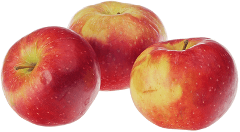

Яблоки Малинка
Некрупные чуть приплюснутые ароматные яблоки желто-красного цвета, с нежной и достаточно сочной сладко-кислой мякотью. Урожай этих яблок собирают в конце лета или начале осени, а благодаря натуральному восковому налету они отлично хранятся до декабря. Из таких яблок хорошо делать домашние соки или компоты, а также джемы и другие заготовки.
| Цвет плодов: | ярко-малиновый |
| Высота дерева: | до 3 м |
| Вес плодов: | 15 гр |
| Вкус (сладкий, кислый и тд): | кисло-сладкий |
| Время созревания : | сентябрь |
| Срок созревания | осенний |
| Срок хранения | до 3.5 месяцев |